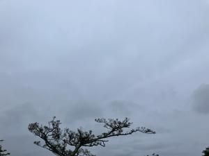
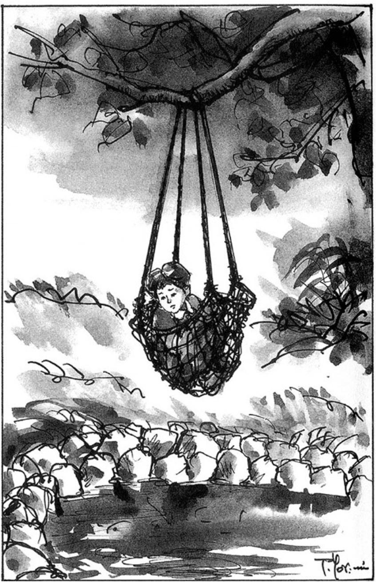

うるがいの話 ある日
最新: 白旗の少女と私の妹【うるがいの話 ある日】とは 一日だけのプログです
『うるがいの話』の最新一日だけのプログで、通信料が少なく経済的だ。カニの画像をクリックすると全ての日付が載る『うるがいの話』サイトを表示します
|
|
【うるがいの話】 うるがい(ｳﾙｶﾞｲ urugai)とは、『もずくがに』の名前でとても大きくなります。 |
|---|---|
|
|
【カミマヤーの話】 猫のことを方言でマヤーといいます。カミマヤー（kamimayaa）とは、神の猫のことです。 |
|
【たながぁの音楽】 たながぁ（ﾀﾅｶﾞｰ tanagaa）とは手長えびのことで、何種類かあり大きいのは車 エビぐらいになります。 |

|
【ぶながぁの話】 ぶながぁ(ﾌﾞﾅｶﾞｰ bunagaa)とは、赤い髪の毛、赤い身体、そして身長は１ｍ２０ｃｍ ぐらい、川の蟹を食べているの目撃された。場所は沖縄県国頭郡大宜味村のと ある村僕の隣近所に住んでいる爺さんから、聞いた話です。 |
|
|
【ギーマの話】 ギーマ(giima)とは、山原の里山に咲くスズランに似た、 花を付けます。実は食べられます、 気が付くと口の周りが紫になっています。 |
2026年05月06日 (水）白旗の少女と私の妹
16:36

白旗の少女 比嘉 富子∥著Dorothy Britton∥ より
やっていいことと悪いことがある。富子、ここへきなさい。いま
からお仕置きをする。」といって、わたしを横だきにすると両手
両足を縄でしばり、モッコに入れ、肥だめの上にはりだしている
ユウナの枝につりさげてしまったのです。

ン、私の妹（次女）が父親に𠮟られて、同じように手足をひもで
結ばれ、天井からぶら下げらていた。今の時代だと信じられない
でしょうが、事実です。
比嘉富子が、５，６歳の時の話ですが、よく覚えていると思う。
中学生の頃、友達と一緒に海で泳いでいたとき、サバニで漁へ行
く父親が、何かに怒って（内容を忘れた）泳いでいる私を、エー
ク（櫂）で頭を、押さえて海に沈めた。一緒にいた友達は、その
光景驚いていた。
梅雨入りの国管理９ダム合計が、４９．７％と５０％を割ってい
たが、連日の雨で５１．２％（５月６日１６時１０分）に増えて
いる。昨日は、傘を持って歩いていたが、途中から大振りになっ
たので、即座に家に帰った。さて、今日は・・・・。